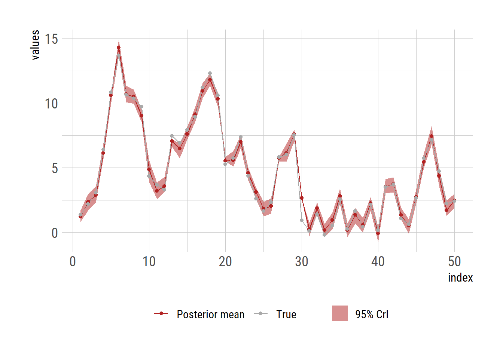

# create a data set: x (latent variable) and y (observation)
set.seed(42) # to make it reproducible (lots of random numbers follow)
T <- 50 # number of observations
x <- rep(NA, T) # latent variable
y <- rep(NA, T) # observed values
sx <- 2.2 # standard deviation for x
sy <- 0.3 # standard deviation for y
x[1] <- rnorm(1, 0, 1)
y[1] <- rnorm(1, x[1], sy)
for (t in seq(2, T)) {
x[t] <- rnorm(1, x[t-1], sx)
y[t] <- rnorm(1, x[t], sy)
}
x_true <- x
obs <- yParticle filter using R
particle filter
A simple particle filter in R
The following example was adapted from the post in RPubs.
Simulate the data
Generate \(y_{1:T}\) as a sequence of noisy observations of a latent variable \(x_{1:T}\).
Implement a particle filter (sequential Monte Carlo)
# particle filter -----------------------------------------------------------
T <- length(y) # number of observations
N <- 100 # number of particles
# to store prior distributions for variables correspond to latent variable x
x_prior <- matrix(nrow=N, ncol = T)
x_post <- matrix(nrow=N, ncol = T) # posterior distributions
weights <- matrix(nrow=N, ncol = T) # weights used to draw posterior sample
W <- matrix(nrow = N, ncol = T) # normalized weights
A <- matrix(nrow = N, ncol = T) # indices based on the normalized weights
x_prior[, 1] <- rnorm(N, 0, sx)# initial X from a normal distribution
# calculate weights, normal likelihood
weights[, 1] <- dnorm(obs[1], x_prior[, 1], sy)
W[, 1] <- weights[, 1]/sum(weights[, 1])# normalise weights
# indices based on the weighted resampling with replacement
A[, 1] <- sample(1:N, prob = W[1:N, 1], replace = T)
x_post[, 1] <- x_prior[A[, 1], 1] # posterior distribution using the indices
for (t in seq(2, T)) {
x_prior[, t] <- rnorm(N, x_post[, t-1], sx) # prior x_{t} based on x_{t-1}
weights[, t] <- dnorm(obs[t], x_prior[, t], sy) # calculate weights
W[, t] <- weights[, t]/sum(weights[, t]) # normalise weights
A[, t] <- sample(1:N, prob = W[1:N, t], replace = T) # indices
x_post[, t] <- x_prior[A[, t], t] # posterior samples
}Summarize results
Calculate the mean and 2.5\(^\textrm{th}\) and 97.\(^\textrm{th}\) percentile of the posterior sample as a means to get 95% credible interval.
x_means <- apply(x_post, 2, mean) # posterior mean
x_quantiles <- apply(x_post, 2, function(x) quantile(x, probs = c(0.025, 0.975))) # 95% credible interval
df <- data.frame(t = seq(1, T),
x_mean = x_means,
x_lb = x_quantiles[1, ],
x_ub = x_quantiles[2, ],
x_true = x_true, # latent variables
y = y) # observed valuesPlot the results
library(ggplot2)
extrafont::loadfonts("win", quiet=TRUE)
theme_set(hrbrthemes::theme_ipsum_rc(base_size=14, subtitle_size=16, axis_title_size=12))
ggplot(df, aes(x = t)) +
geom_ribbon(aes(ymin = x_lb, ymax = x_ub, fill="95% CrI"), alpha=0.5) +
geom_line(aes(y=x_mean, color="Posterior mean")) +
geom_line(aes(y=x_true, color="True")) +
geom_point(aes(y=x_mean, color="Posterior mean")) +
geom_point(aes(y=x_true, color="True")) +
labs(y="values", x="index") +
scale_colour_manual("", values=c("Posterior mean"="firebrick",
"True"="darkgrey")) +
scale_fill_manual("", values="firebrick")+
theme(legend.position = "bottom")
# ggsave("particle_filter.png", gg, units="in", width=3.4*2, height=2.7*2)